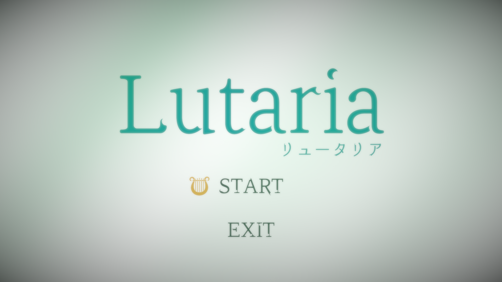
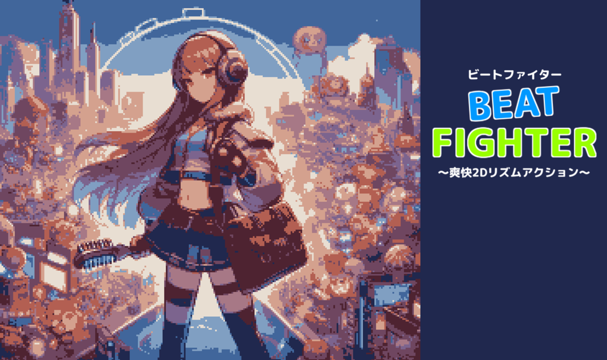

Sho Nishimura's Portfolio
自己紹介
西村 将 / Sho Nishimura
2026年度から高専5年生、情報系の部活動では2025年度後期から部長を務めています。
ゲーム開発だけでなく楽曲制作活動も行っており、現在までに制作した曲は50曲を超えています。
主な受賞歴
- ETロボコン2024 東北地区大会: モデル審査部門3位 奨励賞
プロジェクト
Lutaria

制作期間: 1週間
制作人数: 1人
制作目的: 自分のUnityのスキルでどこまで作りこめるか確認する
使用技術: Unity, NotesEditor
ジャンル: リズムゲーム
詳細を見る
BeatFighter

制作期間: 6ヶ月
制作人数: 4人
制作目的: 小学生向けエンタテインメントシステムを作る
使用技術:
役割: リーダー, プログラマ(ゲーム、組み込み)
ジャンル: 2Dリズムフィットネスゲーム
詳細を見る
ETロボコンへの取り組み

期間: 4ヶ月
チーム人数: 6人
目的: 組み込み技術やその設計手法について学び、受賞する
使用技術:
役割: リードプログラマ, システム設計も担当
詳細を見る
FushigiWorks (開発中のゲームエンジン)

制作期間(現在まで): 4ヶ月(構想段階を含めると1年程)
制作人数: 1人
制作目的: 現代のグラフィックス技術について学び、ゲームエンジン設計について考える
使用技術:
DirectX12
Assimp(3Dモデル読み込み用)
WPF(エディタ制作)
PySide2(エディタ制作)
詳細を見る
メロディ自動作成システム

制作期間: 1年
制作人数: 1人
制作目的: AI技術が急速に発展し、AIが作成した絵や文章が話題となっていたが、自動作曲AIは聞いたことがなく、作りたいと考えたから
使用技術:
詳細を見る
スキル
5: 熟練
4: 応用的
3: 標準的
2: 基礎的
1: 初歩的
プログラミング歴
C/C++ (3年半)
C# (3年半)
Python3系 (1年)
JavaScript (1ヶ月半)
HTML (10日)
ゲーム開発歴
DxLib (3年)
Unity (3年)
Siv3D (2ヶ月)
楽曲制作歴
iOS版GarageBand (6年)
CakeWalk (1年)
エディタ
Visual Studio Code
Visual Studio
PyCharm
JupyterNotebook
Lutaria (リュータリア)
ゲームの詳細
「Lutaria」はリズムゲームです。プレイヤーは収録されている曲(現在2曲)を選択して遊ぶことができます。
プレイの結果によりスコアが変化し、ミスなしでクリアすると"Full Combo"、全てPerfect判定だと"All Perfect"の評価をもらえます。
工夫点
神秘的な雰囲気を演出するため、被写界深度やビネットといったポストエフェクトを追加しました。
またポストエフェクトだけでなく、2Dライティングエフェクト(グラデーション背景等)をカメラ前に配置することで、さらに神秘的な印象を与えられるようにしました。
開発背景
もともとリズムゲームというジャンルが好きだった事もあり、自分で作ってみようと思ったことがきっかけです。
今ある有名なリズムゲームの世界観というものは様々なジャンルの要素を取り入れており、何か一つに特化したものではありません。
そのため、自分が好きな「ケルト、ジプシー風」の要素をメインとした物を作ろうと考えました。
タイトルは、"lute (リュート族の楽器)" + "aria (詠唱)" で "Lutaria" としています。
見つかった課題とその解決方法
ゲームプレイ中、ノーツ判定タイミングが合わない
→ 楽曲再生タイミングと判定タイミングそれぞれの設定ができるようにする
今後の予定
BeatFighter (ビートファイター)
ゲームの詳細
「BeatFighter」は2Dリズムフィットネスゲームです。小学生が楽しめるように、ドット調のデザインを採用しました。
プレイヤーは専用コントローラを手首と太ももに装着し、体を動かすことでキャラクターを操作します。
プレイヤーのする動作はジャンプ、パンチの二つで、迫りくる障害物をジャンプで飛び越え、襲ってくる敵をパンチで倒します。
工夫点
敵がパンチで倒されたとき、遠く彼方に飛んでいくようなエフェクトを作成しました。
さらに、パンチやジャンプがされたかが直感的にわかるように、手首コントローラに振動機能をつけ、画面上でもエフェクトを追加しました。
また、自作の譜面フォーマットにより、流れてくる譜面を簡単な楽譜のように記述できるようにしました。
開発背景
このゲームは高専4年生の情報実験で作成したエンタテインメントシステムです。
この情報実験は、情報コースの生徒が約4人ずつのグループに分かれ、企画会議から始めました。
最初に出た案としては、「3次元マインスイーパ」や「影絵シミュレータ」等でしたが、小学生が楽しめるかという点が残り続けました。
そこで私は文部科学省の小学生とスクリーンタイムの関係についてのデータをみて、圧倒的に運動時間が少ないことに気が付きました。
そのため、体を動かしながら楽しめるシステムを作成すれば一石二鳥なのではと考え、この「リズムフィットネス」というジャンルにたどり着きました。
見つかった課題とその解決方法
シーン間の遷移時に次のシーンにデータを渡したい
→ 辞書データをシーン遷移関数の引数に渡すことで、遷移先でその値を使用できる。
ジャンプやパンチの判定に用いた加速度センサの値が安定せず、多重反応を起こす
→ 加速度の値にフィルタをかけ、しきい値を定めることによって、安定した判定にする
今後の予定
ETロボコン2024への取り組み
ETロボコンとは
ETロボコンとは、課題のためにロボットから作り始めるロボットコンテストとは違い、全チーム同じ機体を使ってレースをするものです。
競技はスタートからコース途中のゲートまでのタイムアタック、コース終盤の難関コースの攻略率による審査がされます。
審査は競技の成績だけでなく、ソフトウェアモデリング(設計)の技能も問われます。
このような取り組みによって、チーム開発で必要なプロジェクトマネジメント、チームビルディング等を学ぶことができます。
役割
チームの中で過去にETロボコンに出場したことがあるメンバーは自分だけだったため、プログラム開発、設計の両方を担当しました。
基本的な活動
まずはチーム全員でどのようにコースを攻略するか話し合い、一番安定感があり、ある程度のタイムも出せるようなルートどりを目標に開発を始めました。
攻略法を決めたらまず要求分析を行って機能のリストアップをし、足りない技術について習得しました。
その後、その習得した技術等を基に図に起こして設計し、逐次コーディングしていきました。
直面した課題
基本的なコーディングの問題は自分でマニュアルなどを見ながら解決することができました。
しかし開発中、この大会の基本技能となるライントレース走行がうまくいかず、開始早々コースアウトしてしまう問題が発生しました。
しかしチームメンバーが「この値はこのくらいでよさそう」や「こんな動きすればいい」等、様々な意見をくれたため、メンバーと協力しつつ競技を完走できる所まで持っていきました。
大会当日
結果はモデル審査部門3位でしたが、競技ではあまりいいスコアが出せず、総合順位も半分ほどになってしまいましたが、結果的に奨励賞をとることができました。
大会を通して
2年間のETロボコン出場経験を通して、やはりチーム開発はプログラム開発において重要だと改めて実感しました。
ETロボコン2023では、3人チームで出場しましたが、取り掛かりの遅さやワンマンのプログラミングによるメンバーのプログラム理解の時間長時間化(自分含め)等があり、大会でも成績は残せませんでした。
2024年大会ではそのような問題が発生しないように行動できたので受賞することができたと考えています。
FushigiWorks (不思議ワークス)
詳細
FushigiWorksは現在開発中のゲームエンジンです。Unityライクなゲームエンジンを目指しています。
工夫点
シーン情報をjsonファイルに格納することで、シーンのロードとセーブが用意に行えるようにしました。
ScriptableBaseクラスを継承することで、各オブジェクトの振る舞いを簡単に処理、記述できるようにしました。
現在は開発できていませんが、エディタ部分とランタイム部分を別exeで実行し、IPC通信によって連携させるため、片方がクラッシュしてももう片方は影響を受けない設計にしようと考えています。
開発背景
Unityでゲームを開発していた時、ふと内部処理がどうなったか気になったのがきっかけで、学校の図書館にあったゲームエンジン設計の本を読みました。
そこにはおびただしい数式の数や、見たことも聞いたこともない概念が描かれていて、正直恐怖さえ感じていましたが、同時に好奇心が湧いていました。
見つかった課題とその解決方法
画像を描画しようとすると上下左右が反転してしまう
→ 適切なアスペクト比と視野角を与える
頂点バッファやインデックスバッファの処理を逐次描いていたため非常に効率が悪い
それぞれを使いやすいクラスにまとめる
シェーダーを書き換えないと白黒表示やエンボス加工表示、ぼかしなどの処理ができない
条件分岐などを使って適切なシェーダーを選択する(未実装)
実行すると最大60FPSが出る設定にしているが30FPS程しか出ない
mapで保存しているコンポーネントデータをベクター等に保存するようにし、イテレーション効率を高める(未実装)
今後の予定
メロディ自動生成システム
システム詳細
このシステムは事前に学習させたデータによって、自動でメロディを生成してくれるものです。
開発背景
メインのページにも書きましたが、きっかけはAIが作成した絵や文章をよく見かけるようになったことです。
このシステムを開発した当時はまだAI技術が有名になり始めた頃で、純粋に楽しそうだと感じたので「何かAIを使った作品を作りたい」と考えました。
簡単な機械学習アルゴリズムとして「マルコフ連鎖」というものを見つけたため、これをベースに開発していく事にしました。
見つかった課題とその解決方法
実際、マルコフ連鎖アルゴリズムがどのように確率を決定しているか分からない
→ 確率行列を表示可能にしたり、グラフ化ライブラリを用いて確率遷移図を作成できるようにする
今後の予定